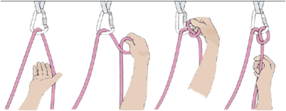

ASOCIATIA NATIONALA A SALVATORILOR MONTANI DIN ROMANIA
PROCEDURI ȘI TEHNICI DE BAZĂ ÎN SALVAREA MONTANĂ
Asigurări
Amenajarea unui punct de amaraj
Amenajarea punctului de amaraj reprezintă în salvarea montană cea mai importantă operaţiune tehnică. Acesta este punctul în care se asigură atât salvatorii montani cât şi materialele cu care se transportă accidentaţii. Forţele care acţionează în punctul de amaraj sunt foarte mari, ajungând până la 2000 – 2500 kgF. Pentru securitatea acţiunii se recomandă amenajarea punctului de amaraj în cel puţin două puncte fixe


AMARAJ DE FORTA LA 4 PUNCTE
Acest tip de amaraj este recomandat ca si punct de lansare a accidentatului in teren variat si Abrupt

AMARAJ DE FORTA LA 4 PUNCTE CU BUCLA DUBLA DE SOLIDARIZARE
Acest tip de amaraj de forta este recomandat in cazul in care exista peste 3 salvatori in atelierul de lucru aflat in teren accidentat ( punctul de solidarizare trebuie efectuat conform fig 1-2-si 3 in vederea echivalari coeficientului de rezistenta din sistemul de solidarizare a pitoanelor si distributia dinamica a buclelor de ancorare


Fig.1
Fig. 2
Fig. 3
AMARAJE LA PUNCTE NATURALE
Tipuri de Amaraje recomandate in transportul accidentatului in teren variat unde se preia mijlocul de transport din amaraj in amaraj


AMARAJ DE FORTA LA 3 PUNCTE
Realizarea amarajului de forta la 3 puncte cu dublarea punctului de lansare cu carabiniere in loc de coarda


Amaraj de forta fara bucle intermediare intre solidarizari
AMARAJ PE ANOURI
In cazul efectuari de amaraje cu ajutorul a 2 anouri va trebui sa reasiguram cu un nod simplu punctul de inbinare a chingi. Fig 1 .In cazul in care efecuam solidarizarea a 2 puncte cu un singur anou atunci nodul se face la jumatatea anoului si trecut o carabiniera prin cele doua ochiuri rezultate Fig 2


Fig. 1
Fig. 2
Rezistenta anourilor in punctul de amaraj in functie de dispunerea lor
Amenajarea regrupării
Regruparea reprezintă locul în care o echipă de salvatori montani se adună după parcurgerea unei lungimi de coardă . Printr-o lungime de coardă se înţelege lungimea intermediara a corzi în care sunt asiguraţi salvatorii montani, aceasta putând varia între 30 şi 40 de metri. În cazuri excepţionale, în care terenul nu permite amenajarea regrupării la distanţele menţionate mai sus, aceasta poate fi făcută şi mai aproape de punctul de amaraj. O regrupare trebuie să asigure loc pentru toată echipa de salvatori, dar există şi cazuri în care platforma naturală nu permite acest lucru şi, în acest caz, regruparea poate fi făcută expusa( în scăriţe).


Autoasigurarea
Autoasigurarea echipei în regrupare (fig.67) se face în punctul de amaraj descris în cap.4.1. În regrupare nu este permis ca coechipierii să fie asiguraţi unul de celălalt. Autoasigurarea se va face pentru fiecare salvator montan, în punctele fixe din regrupare prin intermediul unei bucle de coardă cu diametrul de 8 mm. şi lungimea de 1 – 1,5 m., prinsă de punctul fix prin nodul cabestan ( sau efectuarea unui cabestan dupa nodul de legare din ham))


Asigurarea (în deplasare)
Asigurarea dinamică
Prin asigurarea dinamică înţelegem asigurarea făcută din punct în punct, de către un salvator montan aflat în deplasare (fig.69 – 70)
În această situaţie, salvatorul montan trebuie să se asigure în aşa fel încât distanţa dintre el şi ultimul punct de asigurare să nu fie egală sau mai mare decât distanţa dintre acest ultim punct şi coechipierul care face asigurarea.
Pericolul constă în faptul că în cazul desprinderii, distanţa dintre capul de coardă şi ultimul punct de asigurare va fi mai mare decât dublă, adăugându-se şi coeficientul de întindere a corzii, care poate fi între 7 şi 10%.


Montarea asigurărilor în deplasarea secundului
•Corectă – în caz de desprindere, secundul rămâne în pitonul de asigurare.
•Incorectă – în caz de desprindere, secundul rămâne cu toată greutatea în mâinile capului de coardă.

În deplasările echipelor de salvare se practică şi asigurările făcute cu ajutorul balustradelor. La acest tip de asigurare dinamică se recurge în parcurgerea unor zone mai puţin periculoase. Asigurare cu ajutorul balustradei se face în felul următor: se fixează o coardă, de preferat statică, între două puncte de amaraj; pe lungimea corzii se mai fixează puncte de asigurare în aşa fel încât balustrada să nu facă buclă; salvatorul se ancorează pe această balustradă prin interiorul unei bucle cu nod Prusik sau blocator

Asigurarea statică
Prin asigurarea statică se înţelege asigurarea făcută de unul dintre salvatorii montani, într-un punct fix, pentru un alt salvator montan care se află în deplasare. Acest tip de asigurare se realizează la baza unui perete sau în regrupare.
Pentru asigurarea statică se recomandă:
•Să fie făcută într-un alt punct fix decât cel în care este autoasigurat salvatorul montan care face asigurarea coechipierului (fig.73),
•Să fie făcută în aşa fel încât cel asigurat să se poată deplasa fără şocuri, iar în caz de desprindere, să poată fi oprit,
•Filarea sau slăbirea corzii să se facă progresiv.
Asigurarea statică se poate face în mai multe moduri: Fig 8
•prin carabinieră şi nodul cabestan
•cu ajutorul ştihtului
•cu ajutorul nodului opt de coborâre
•cu ajutorul grigri-ului


Fig. 8
Fig. 73
METODE DE ASIGURARE
Împotriva căderii, persoana care se caţără este asigurată prin coarda ţinută de coechipier. Eficienţa asigurării depinde de o serie de factori ce alcătuiesc lanţul de asigurare: ham, nod, coardă, carabiniere, pitoane, dispozitiv de frânare.
Asigurarea se execută dinamic (prin frânare treptată) şi nu static (prin blocarea corzii) deoarece se pot depăşi uşor limitele de rezistenţă ale echipamentului.
Frânarea se face cu mâna, recomandându-se începătorilor purtarea unei mănuşi de piele pentru evitarea arsurilor.
Cele mai cunoscute dispozitive de frânare sunt opt-ul de rapel, plăcuţa Sticht, nodul semicabestan şi dispozitivul GRI-GRI.
OPT-ul
Metoda de asigurare cu opt-ul aplică modelul nodului de rapel. Este o metodă destul de sigură, însă necesită foarte mare atenţie în cazul căderilor grele a capului de coardă.
Mâna poate bloca coarda până la sarcini de 2 KN.(~200 Kg.)*.
Forţa de frânare este cu atât mai mare cu cât mâna care frânează se află mai aproape de opt sau dacă se frânează cu ambele mâini, rolul cel mai important fiind deţinut de mâna aflată după dispozitivul de frânare
PLĂCUŢA STICHT
Această metodă destul de răspândită, foloseşte o plăcuţă (cu o gaură ovalizată) confecţionată din duraluminiu. Dimensiunea găurii trebuie să corespundă cu diametrul corzii folosite. Prin gaură se va trece coarda de asigurare, formând astfel o buclă. În bucla corzii se introduce o carabinieră cu filet care la rândul ei este legată de ham.
Distanţa dintre plăcuţă şi carabinieră trebuie menţinută constant la circa 10 cm. În caz de solicitare, plăcuţa se apropie de carabinieră, obţinându-se astfel efectul de frână.
Mâna poate bloca coarda până la sarcini de 2.5 KN.(~250 Kg.)*.
Forţa de frecare este cu atât mai mare cu cât mâna care frânează se află mai aproape de plăcuţă sau dacă se frânează cu ambele mâini. Dezavantajul acestei metode este faptul că la solicitare puternică (cădere cap de coardă), coarda este gâtuită în plăcuţă.
NODUL SEMICABESTAN
Aceasta metodă a fost inventata de Werner Munter, un colaborator al UIAA în probleme de tehnică a securităţii. Se foloseşte numai o carabinieră cu filet (cu forma ovalizată) atârnată în ham sau în piton. Coarda formează în carabinieră un nod semicabestan care are tendinţa de a frâna coarda prin frecare în caz de solicitare.Mâna poate bloca coarda până la sarcini de 3 KN.(~300 Kg.)*
Forţa de frecare este cu atât mai mare cu cât mâna care frânează se află mai aproape de carabinieră sau dacă se frânează cu ambele mâini. Filetul carabinierei trebuie să se afle în partea mâinii ce frânează. Cu o mână se conduce coarda şi cu cealaltă se frânează.
Dezavantajul acestei metode constă în faptul că în timpul asigurării se realizează o răsucire a corzii in carabinieră.
DISPOZITIVUL GRI-GRI
La căderile importante forţa de soc depăşeşte uşor 3-4 KN iar în cazul folosirii opt-ului, plăcuţei Sticht sau a semicabestanului mâna nu mai poate ţine sarcina şi începe să scape coarda. În final căderea mai poate fi oprită prin frânare dar există riscul ca spaţiul de cădere să crească periculos datorită unei frânari slabe din partea coechipierului ce se teme să nu îşi ardă mâinile.Acest risc nu există cu un dispozitiv GRI-GRI. Omologat de UIAA, se blochează la şoc şi începe să scape coarda de la valori ale forţei de şoc mai mari de 9 KN (pentru a nu fi depăşite normele suportate de echipament) permiţând asiguratorului să execute frânarea căderii.
Este recomandat numai în traseele pentru escaladă sportivă echipate cu pitoane forate (spituri), întrucât solicită mult mai mult pitoanele la cădere decât celelate metode de asigurare.

SEMICABESTAN
GRI -GRI

După o perioadă de practică, nodul semicabestan se poate realiza doar cu o singură mână!
* Valorile sunt date pentru cazul în care se asigură fără mănuşă pentru mâna aflată în urma dispozitivului de frânare. Este însă foarte recomandabilă purtarea unei mănuşi de piele (mai ales la începători) pentru evitarea arsurilor mâinii şi implicit a urmărilor măririi distanţei de cădere